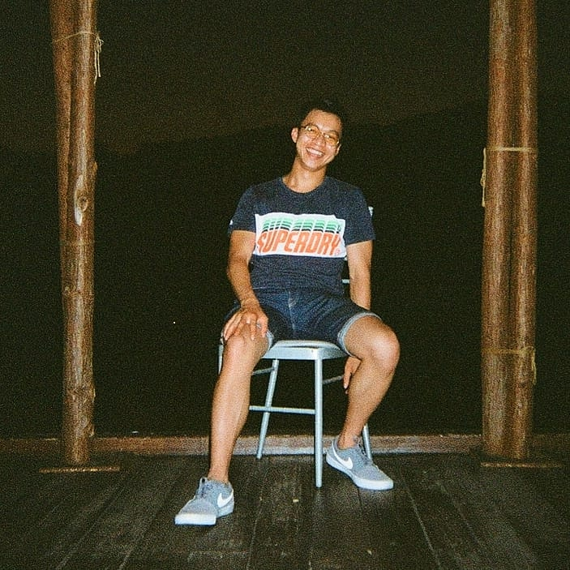
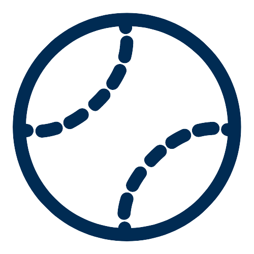
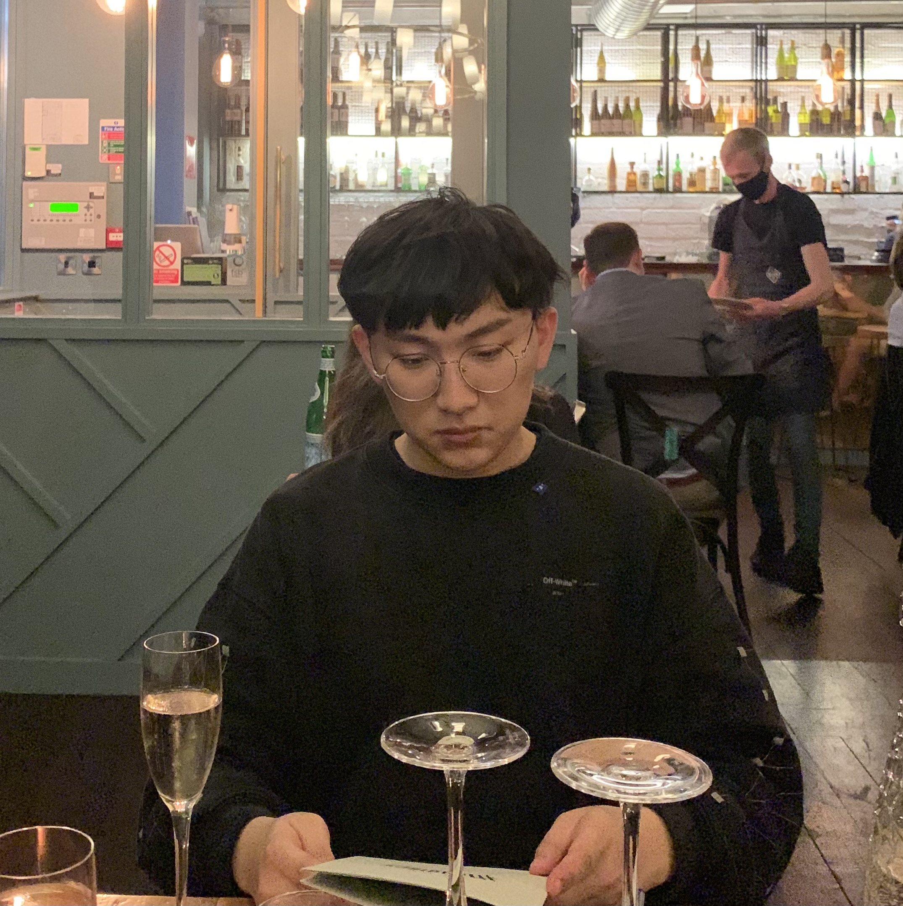
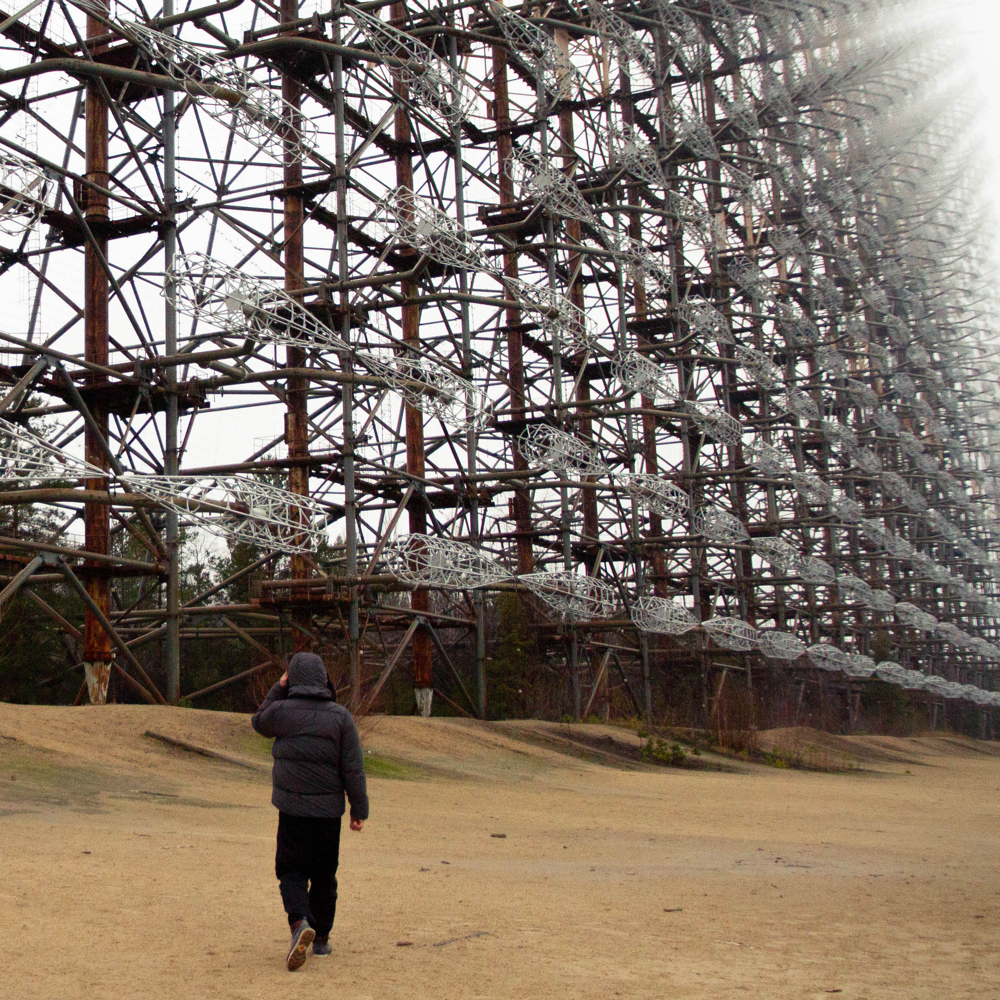

This project would not have been possible without the following members.
| Name | About | Role | |
|---|---|---|---|
| Konrad Pijanowski | Loves solving challenging problems in a creative way using cutting edge technologies. Not afraid to experiment with different approaches until he finds the one that suits him the best. At all times, Konrad ensured that the team was on the right track to achieve its goals. On top of that, he was working on the localization and navigation of the robot. | Project Manager / Hardware Developer | |
| Kyle Cotton | Specialising in high performance, secure, and reliable software, Kyle is a huge fan of the Rust language and is a very active member of the community. | Tech Lead / Backend Developer |
|
|  | Justin Howe | With the continuous advancement of digital devices in our modern world, I have always been fascinated by how transforming innovative ideas into interesting artifacts, such as creating web applications, can blossom a positive impact in people’s lives. | Frontend Developer / Promo Website Editor |
|  | Lucia Garcia Velasco | Insert Bio | Frontend Developer / Video Editor |
| Alex Mamina | Insert Bio | Navigation Algorithm Creator / User and Report Guide Editor |
|
|  | Wang Huabing | Professional on hardware design and integration. Had several previous experience working on projects with Raspberry Pi based platform. | Hardware Developer |
| Joey Lam | Insert Bio | Hardware Developer | |
|  | Cong Dou | Experienced in electrical engineering and industrial design. | Hardware Developer |
Within any large and complex hardware/software system, the organisation of the group members and the interoperability between the specific teams within that group are essential to the success of the project as a whole. For this reason particular emphasis has been placed on this area, with specific dedicated planning and discussion.
With the current global situation, geographical and time constraints, in-person collaboration has been rendered impossible for our group.
Therefore, we have arranged virtual meetings.
Microsoft Teams is used for the more formal communication, typically between our team and the client, mentor or other course staff member.
We are also using this platform as our central document store, including files such as our meeting minutes and agenda,
assessed documents (so they can be reviewed by other group members) and our System Specification.
Discord is used extensively by our team to communicate in a text format and also by voice and video.
This method of communication was chosen by us for its numerous merits including: built-in voice and video calling, markdown support,
@name mentions and the fact that there are clients available for all of our systems including mobile apps.
At the start of every week (Monday 09:00 GMT), we will have a short meeting: this is an opportunity for all of the teams to get together
and discuss and inter-team issues (issues in the sense of an aspect of the code base that is to be implemented, updated or removed),
upcoming deadlines and milestones, the task that each member will be doing that week as well as the main tasks they completed the previous week.
This is an opportunity for the direction of the project as a whole to be adjusted in light of a limitation or issues that have been discovered.
In addition to our Full Team Weekly Stand-up, our functional teams will be having their own meetings,
this is left to the discretion of the members of that group. This allows our teams to work with greater flexibility and autonomy,
focusing on the aspect of the project to which they have been assigned and where their skills are most useful.
When initially discussing our options for Communications & Meetings it was clear we all wanted a system with very little ceremony,
something we think our current system has achieved.
A key aspect of our group organisation is the assigning of members to specific functional teams,
that will enable each member to use their expertise effectively to create our project.
The Hardware & Simulation Team is responsible for designing and modelling the robot and its operating environment.
The Hardware/Software Interoperability Team is responsible for designing and implementing the systems that will enable
our command and control systems to communicate with the hardware.
The Back-end Team is responsible for designing and implementing our back-end systems such as API/C2/database servers.
The Front-end Team is responsible for designing and implementing our user facing systems, such as mobile applications and websites.
In addition to the project teams, certain group members have been assigned with additional roles to further support the group.
The Project Manager (Konrad Pijanowski), is responsible for organising the group as a whole,
this includes responsibilities such as monitoring progress of the various teams towards our milestones.
Technical Lead (Kyle Cotton), is responsible for all technical matters, this includes high level system design of the interaction
between the different systems of the project, being a fallback for any technical issues, decomposing the software systems and assigning technical tasks.
Spokesperson/Point of Contact (Alex Mamina), is responsible for communicating with the various elements external to our group,
this could be the course staff, experts or our client, checking and submitting the assessed documents our group must provide.
Secretary (Lucia Garcia), is responsible for preparing agenda for meetings and taking detailed minutes, this forms a record of our
verbal communication to which we can refer back to later and assign any necessary tasks.
The final product for our SDP project will consist of a very large and potentially complex code base, so it is essential that this managed effectively. To enable this a GitHub Organisation has been created, this has many benefits.
This will allow for the various teams to work simultaneously on the project without the worry of conflicting changes. Should the same line of the code be changed multiple times a merge conflict will be created, allowing the team member to select the appropriate version.
For our project we plan on working with a Branch, Review, Approve and Merge model. Any major/overarching charges are to be done on a branch,
reviewed and tested by another team member before they are approved and merged into the master branch.
Only stable tested code should be on the master branch.
There will be two primary ways in which a task will be assigned to a group member. We have decided to use two different software solutions for the two different elements of the design, planning and implementation of the system.
Within our GitHub Organisation we will have multiple repositories, these are essentially areas where we can all work on a single dedicate code base; such as the hardware simulation, API/C2 or mobile apps. Then within each repository we will have issues, these act as essentially tasks. The advantage of using the issues is that the code and tasks are on the same platform, there are very convenient comments on issues as well as member assignment which makes this system central to our group organisation system.
In addition to the GitHub Issues, we are also using Trello which is a very similar system. We are using this system as some of the tasks have no intrinsic relation to the code base, and for that reason, it was decided that they should be kept in a separate location.
Each of the Task Allocation platforms we are using has a Kanban feature, that we will be using. For the GitHub Issues we will be using a backlog system, each team will have their own backlog of tasks that are to be completed. Since we are using a waterfall approach, when the backlog is empty our project will be completed to a very high standard. This will then allow us to look into additional functionality to further improve the system. A Gantt chart has also been produced, this is essential for us to map out the decencies between tasks, for example it will be very difficult to fully test the mobile app before the hardware has been modelled/built. The key milestones of the project will also be clearly displayed on the chart, allowing the progress of the project towards the distortions and project completion.